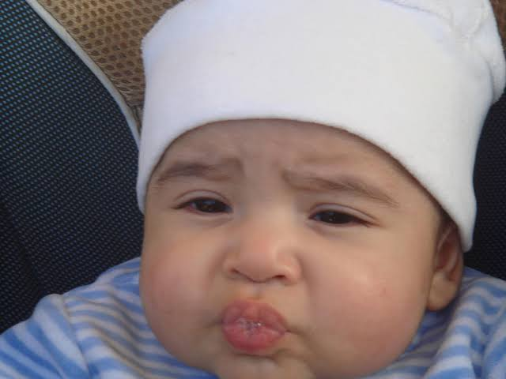

My life
Dear reader, my name is Badr. I was born on 2007 to two parents with the name of Ebaa( my mum) and Alaa( my dad ) in Alexandria. I was also born with a brother 2 years ahead of me. I was sent to a playschool with the name of "Egyptian American School." I was pretty dull and lonely at that time, but only have I noticed I was switching schools that my feelings astonishingly flipped from a head to a tail. I was so content I started running around my room in loops. I was in year 1 when I was sent to that other school ( British School Of Alexandria.) (This is the school's link)
In year 2 I had my very first school trip out of the city( Cairo.) It wasn't that bad but I was expecting much more
